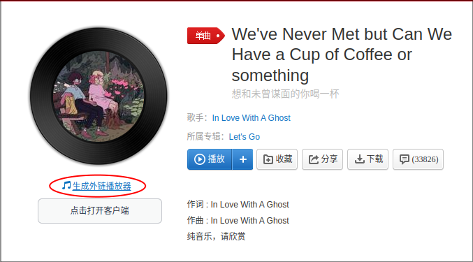
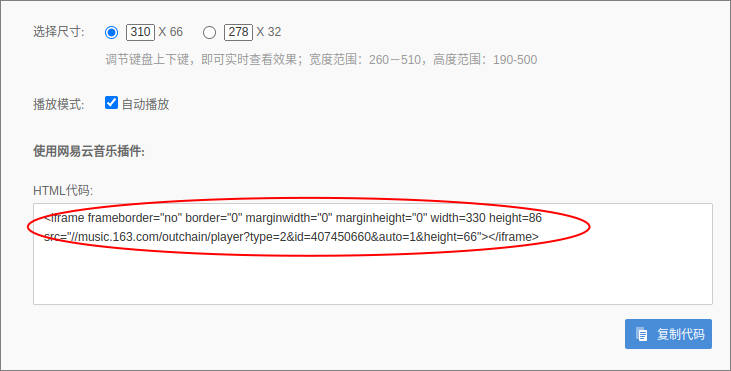

通过git安装主题
1 2 cd [Blogroot]git clone https://github.com/next-theme/hexo-theme-next themes/next
修改博客主配置文件
[Blogroot]/_config.yml 备份NexT主题的配置文件
1 2 cp [Blogroot]/theme/next/_config.yml [Blogroot]/_config.next.ymlmv [Blogroot]/theme/next/_config.yml [Blogroot]/theme/next/_config.yml.template
安装完成，重新生成博客就能直接用了
当然NexT提供了四种主题，可以在_config.next.yml文件中进行设置
[Blogroot]/_config.next.yml NexT主题支持黑化 黑暗模式
[Blogroot]/_config.next.yml 将头像文件放在[Blogroot]/theme/next/source/images/中，然后引用文件URL
或者可以使用网络图片的链接
[Blogroot]/_config.next.yml 1 custom_logo: /images/avatar.jpeg
可以在文章末或侧栏中设置许可信息
[Blogroot]/_config.next.yml 1 2 3 4 5 6 7 8 9 10 11 12 creative_commons: license: by-nc-sa size: small sidebar: false post: true language:
Gemini主题默认的文章宽度太宽了
打开[Blogroot]/themes/next/source/css/_variables/Pisces.styl文件，调整三个变量
[Blogroot]/themes/next/source/css/_variables/Pisces.styl 1 2 3 $content -desktop = 'calc(100% - %s)' % unit ($content -desktop-padding / 2 , 'px' );$content -desktop-large = 1000px ;$content -desktop-largest = 60% ;
这个文件还能调整标题、侧栏等的布局
修改主题配置文件，增加标签、分类、归档等菜单，并为菜单各个选项添加对应的页面
[Blogroot]/_config.next.yml 1 2 3 4 5 6 menu: home: / || fa fa-home about: /about/ || fa fa-user tags: /tags/ || fa fa-tags categories: /categories/ || fa fa-th archives: /archives/ || fa fa-archive
建立页面
1 2 3 hexo n page categories hexo n page about hexo n page tags
编辑添加的页面，主要是要设置好type，让主题能够找到这个页面
[Blogroot]/source/categories/index.md 1 2 3 4 5 --- title: categories date: 2024-05-07 09:04:59 type: "categories" ---
[Blogroot]/source/tags/index.md 1 2 3 4 5 --- title: tags date: 2024-05-07 08:53:57 type: "tags" ---
[Blogroot]/source/about/index.md 1 2 3 4 5 --- title: about date: 2024-05-07 08:53:57 type: "about" ---
[Blogroot]/_config.next.yml 1 2 3 4 5 6 7 sidebar: display: always social: GitHub: https://github.com/Jccc-l || fab fa-github
[Blogroot]/_config.next.yml 1 2 3 social: GitHub: https://github.com/yourname || fab fa-github
可以在配置文件中插入图片URL
[Blogroot]/_config.next.yml 1 2 avatar: url: https://1234567.com/xxxxx.png
或者将头像文件放至[Blogroot]/themes/next/source/images/中，然后设置头像
[Blogroot]/_config.next.yml 1 2 3 4 5 6 7 avatar: url: /images/avatar.jpeg rounded: false rotated: false
[Blogroot]/_config.next.yml 1 2 3 4 5 6 7 8 9 10 toc: enable: true number: false wrap: false expand_all: false max_depth: 6
还可以在侧栏添加知识共享许可信息，在网页信息 部分有提到
打开网易云音乐的一首音乐的页面，点击生成外链播放器

复制HTML代码

编辑[Blogroot]/themes/next/layout/_macro/sidebar.njk文件，在其中合适的位置添加代码，并将iframe改为embed
[Blogroot]/themes/next/layout/_macro/sidebar.njk 1 <embed id="musicplayer" frameborder="no" border="0" marginwidth="0" marginheight="0" width=400 height=86 src="//music.163.com/outchain/player?type=2&id=407450660&auto=1&height=66"></embed>
然后重新生成博客即可
如果想在切换页面时仍然保持音乐的播放，需要开启pjax
[Blogroot]/_config.next.yml
自动播放用不了，暂时不知道怎么解决
修改NexT主题配置，自定义footer
[Blogroot]/_config.next.yml 1 2 3 custom_file_path: footer: source/_data/footer.njk style: source/_data/styles.styl
编辑footer.njk文件
[Blogroot]/source/_data/footer.njk 1 2 3 4 5 6 7 8 9 10 11 12 13 14 15 16 17 18 19 <div> <span id="timeDate">载入天数...</span><span id="times">载入时分秒...</span> <script> var now = new Date(); function createtime() { var grt= new Date("05/04/2023 00:00:00"); now.setTime(now.getTime()+250); days = (now - grt ) / 1000 / 60 / 60 / 24; dnum = Math.floor(days); hours = (now - grt ) / 1000 / 60 / 60 - (24 * dnum); hnum = Math.floor(hours); if(String(hnum).length ==1 ){hnum = "0" + hnum;} minutes = (now - grt ) / 1000 /60 - (24 * 60 * dnum) - (60 * hnum); mnum = Math.floor(minutes); if(String(mnum).length ==1 ){mnum = "0" + mnum;} seconds = (now - grt ) / 1000 - (24 * 60 * 60 * dnum) - (60 * 60 * hnum) - (60 * mnum); snum = Math.round(seconds); if(String(snum).length ==1 ){snum = "0" + snum;} document.getElementById("timeDate").innerHTML = "本站已安全运行 "+dnum+" 天 "; document.getElementById("times").innerHTML = hnum + " 小时 " + mnum + " 分 " + snum + " 秒"; } setInterval("createtime()",250); </script> </div>
时间改为网站的起始时间
[Blogroot]/_config.next.yml 1 2 footer: copyright: <span id="copyright"> 路过的即是风景. All rights reserved. Non-commercial use allowed under <a href="https://creativecommons.org/licenses/by-nc-sa/4.0/" target="_blank">CC BY-NC-SA 4.0 </a>.</span>
配置以下内容，可以在页面顶部或底部添加浏览进度条
[Blogroot]/_config.next.yml 1 2 3 4 5 6 7 8 9 reading_progress: enable: true position: top color: "#37c6c0" height: 3px
[Blogroot]/_config.next.yml 1 2 3 4 5 6 7 8 9 10 11 12 13 14 15 16 17 18 codeblock: theme: light: github dark: github-dark prism: light: prism dark: prism-dark copy_button: enable: true style: flat fold: enable: true height: 500
自定义styl文件，设置背景
[Blogroot]/source/_data/styles.styl 1 2 3 4 5 6 body { background : url (/images/background.jpg) no-repeat fixed; background-size : cover; background-position : center; }
设置文章背板等的颜色，并设置半透明效果
[Blogroot]/source/_data/styles.styl 1 2 3 4 5 6 7 .main-inner > .sub-menu ,.main-inner > .post-block ,.main-inner > .tabs-comment ,.main-inner > .comments ,.main-inner > .pagination { background : rgba (245 , 245 , 245 , 0.8 ); }
将代码块、图片等部分透明度调为1，即不透明
[Blogroot]/source/_data/styles.styl 1 2 3 4 5 6 img { opacity : 1 ; } .table-container { opacity : 1 ; }
设置侧边栏的透明度
[Blogroot]/source/_data/styles.styl 1 2 3 .sidebar { opacity : 0.9 ; }